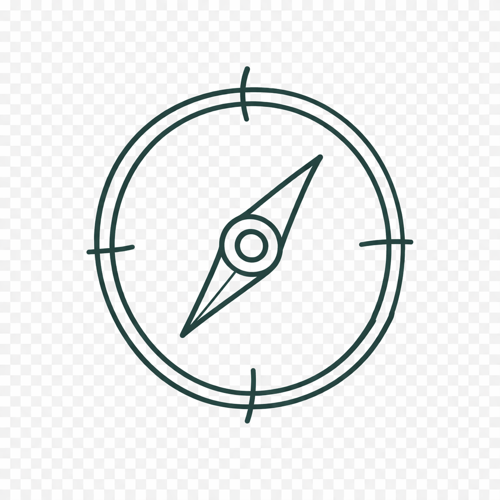
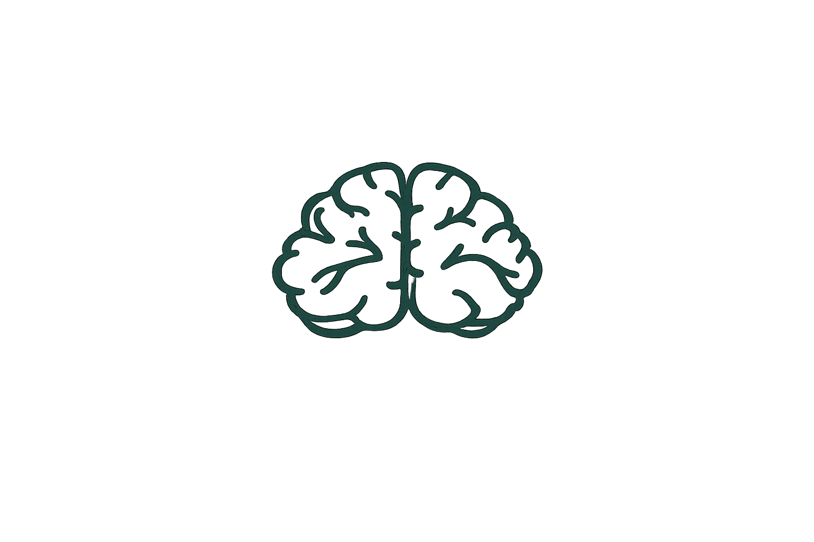
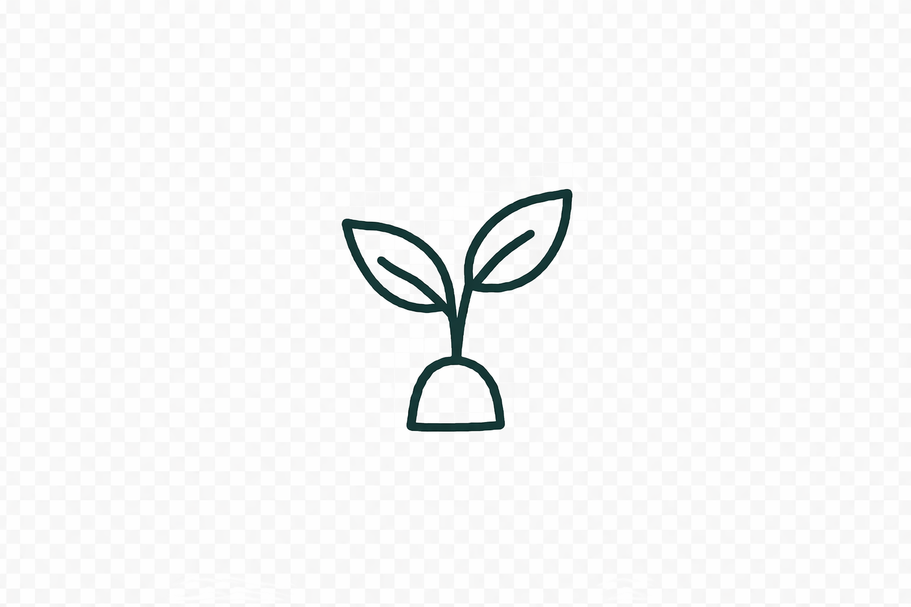
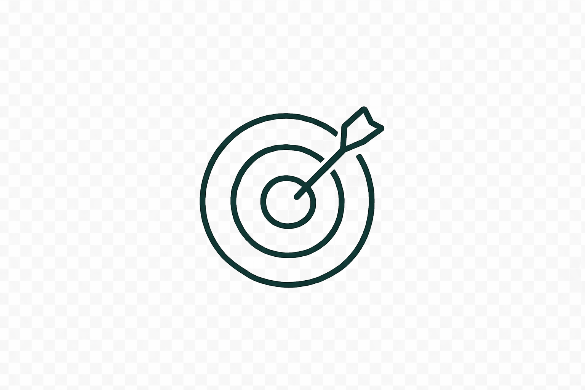
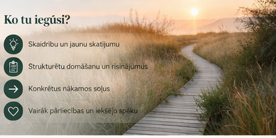
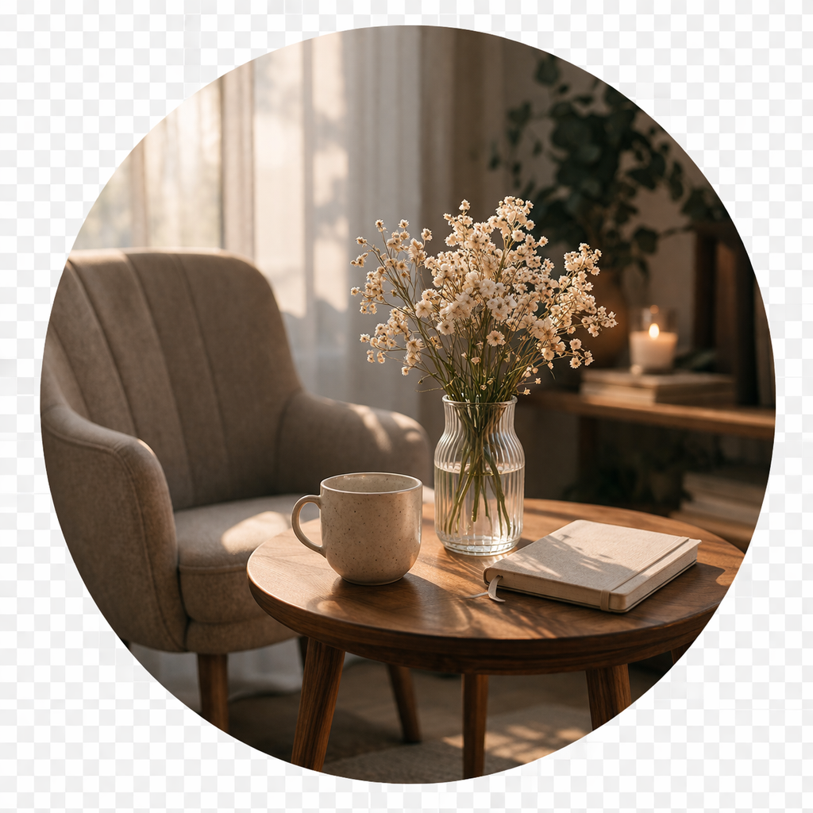
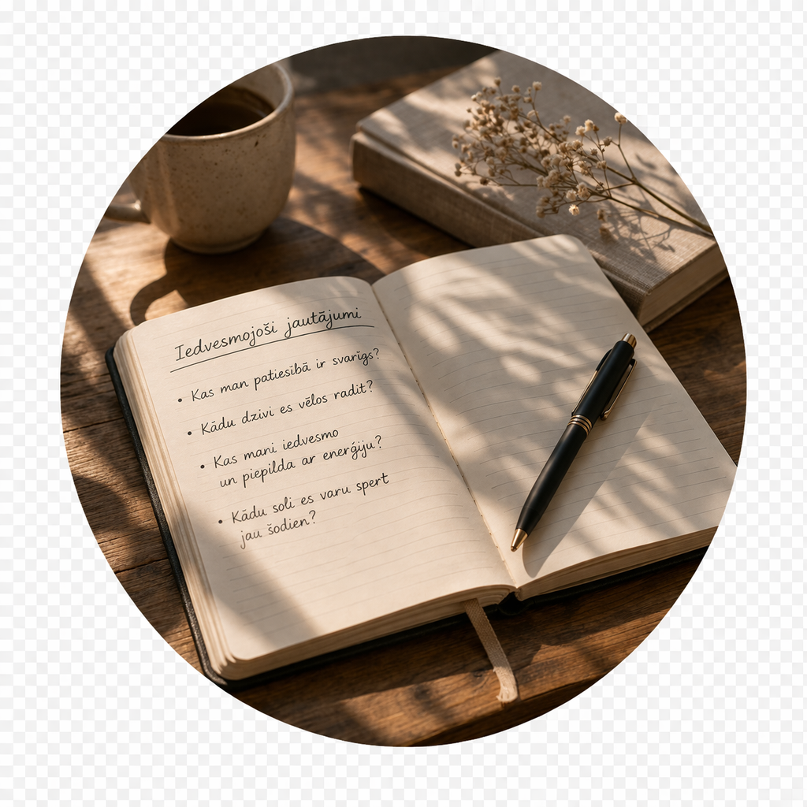
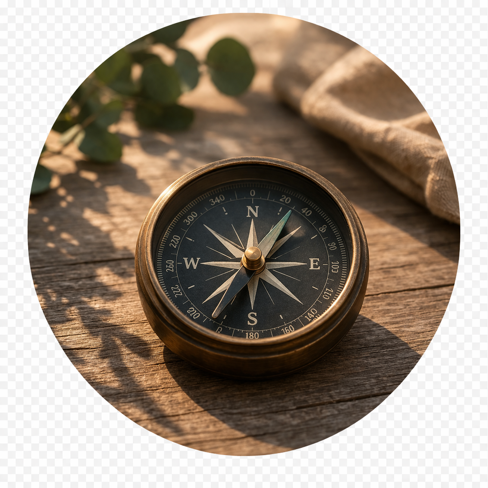
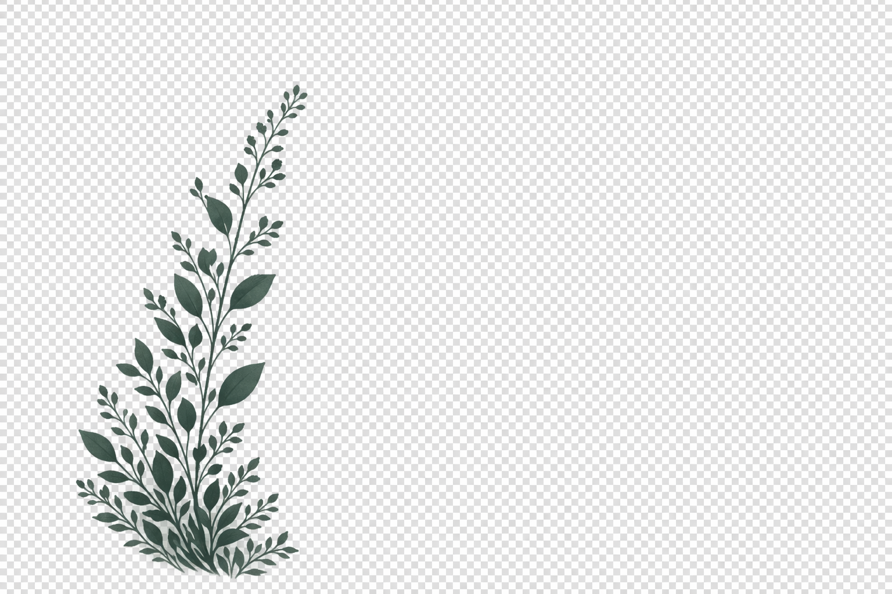

Atbalsts ceļa izvēlē un virziena noteikšanā
Ar vairāk nekā 10 gadu pieredzi cilvēku attīstībā palīdzu atrast virzienu un sasniegt savu potenciālu.
Koučings ir sarunu partnerība, kuras laikā tu iegūsti jaunu skaidrību, ieraugi iespējas un atrodi sevī resursus, lai pieņemtu labākos lēmumus un virzītos uz priekšu.

Atbalsts ceļa izvēlē un virziena noteikšanā

Skaidrība par domām un iekšējiem resursiem

Izaugsme un personīgā attīstība

Konkrēti soļi uz priekšu ar pārliecību


Tu vari būt patiesa un runāt par to, kas tev ir svarīgs.

Es uzdodu jautājumus, kas palīdz ieraudzīt jaunas perspektīvas.
Tu pati nonāc pie skaidrības un svarīgākajām atziņām.

Kopā noformulējam konkrētus soļus, ar kuriem vari sākt jau tagad.

Esmu personāla vadības profesionāle ar vairāk nekā 10 gadu pieredzi HR jomā — no atlases un attīstības līdz pārmaiņu vadībai un komandu labbūtībai.
Uzskatu, ka katrā cilvēkā ir potenciāls, kas gaida, kad to ieraudzīs un praksē aktivizēs. Koučinga pieeju papildina mana reālā biznesa pieredze, lai palīdzētu tev atrast skaidrību, pieņemt drosmīgus lēmumus un virzīties uz priekšu ar mazāk šaubu.